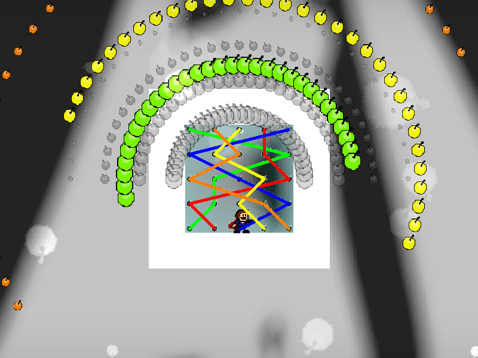
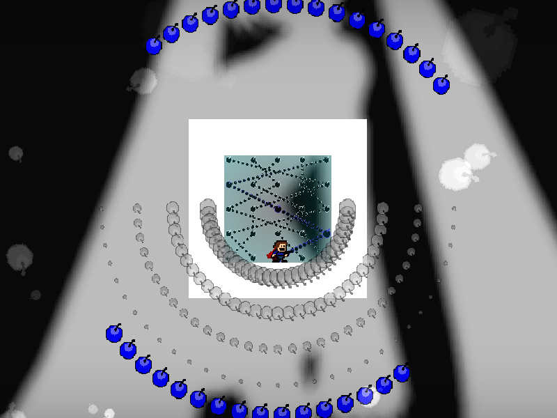

chapter10 - section4
| creator | segment | label | jump |
|---|---|---|---|
| NN | 2:25.20~2:26.80 | A*S | double |
10-1~10-2の解答に対応する、択一型の弾幕です。
10-1~10-2において背景演出として存在する、5行5列の格子点とそれらを結ぶ線分によって構成される弾幕（fig.10-4.1.a）に関して、これらの5つの経路（fig.10-4.1.b）のうち、すべての列に存在する格子点を通過する経路（正解の経路）がただ1つのみ存在します（fig.10-4.1.bにおける橙色）。

10-4における正解の列（fig.10-4.2）については、10-1~10-2における正解の経路が最終的に到達する列（正解の経路を構成する格子点のうち、最も下に位置するものが存在している列）と一致しています。
また、それぞれの経路に関して、10-1~10-2においてn番目（n=1~10）に点灯するものが、10-4における左からn mod 5列目に対応する経路であることを利用することで攻略がしやすくなるかもしれません（fig.10-4.3.a~fig.10-4.3.e）。
